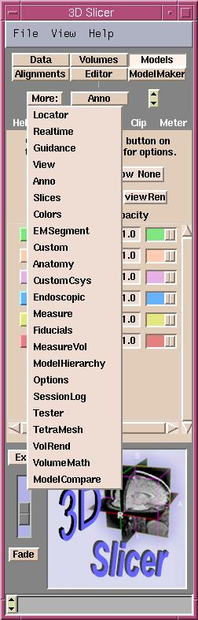

The 3D Slicer is available for Unix and Microsoft Windows, and Linux Redhat
7.3 operating systems. To start the 3D Slicer on Unix, and Linux Redhat 7.3
type 'slicer' at a command prompt. On Windows, double click the 3D Slicer
icon on the desktop or start the 3D Slicer from the Programs menu.
After the 3D Slicer started, it will present two windows.
The Menu window is on the left and the Viewer window is on
the right. The Menu window provides menus for accessing the features
of the Slicer, while the Viewer window displays volumes and models.
The upper part of the Viewer window is the 3D viewer and the lower
part displays the corresponding 2D slices.
A brief explanation of the Menu window will make it easier to refer
to its parts later. At the top of the Menu window there is a pulldown
menu with File, View and Help submenus. Under the pulldown
menu is a series of buttons known as the Main menu. Pressing a button
on the Main menu will take you to the panel associated with
that Slicer feature. Along the top of each panel is a sequence of
tabs, with the leftmost being help on that feature.
The More button in the Menu window lists the modules, which
are available in the 3D Slicer.
| 
|
- Locator: to connect the 3D Slicer to a server that
feeds a realtime stream of coordinates of a tracked device called the locator.
- Realtime: enables the locator's real-time coordinates
to control the 3D Slicer.
- Guidence: positions two spherical targets (red
and yellow) in the 3D view window.
- View: to custom size the viewer window. The stereo
mode allows viewing the 3D window in 3D with red/blue glasses.
- Anno: to control the annotation displayed
in the 2D and 3D viewer.
- Slices: selects the slices to be displayed in the
3D viewer window.
- Colors: to create your own color palette.
- EMSegment: implementation of the "Expectation-Maximization-Segment"
algortihm.
- Custom: a template to use to create your own
TCL modules for the slicer.
- Anatomy: to save files for the SPL Anatomy Browser
out of a slicer scene.
- CustomCsys: for developers to add a Coordinate
System actor to their module.
- Endoscopic: to place and control a virtual endoscope
in the slicer's scene and present the view in a second window.
- Measure: provides measuring tools to calculate
Surface Area, Volume and Cross Sectional Area.
- Fiducials: to add fiducial points on models either
in the 2D or 3D viewer window.
- MeasureVol: to measure the volume of segmented
structure in a labelmap.
- ModelHierarchy: to display the hierarchy of models.
- Options: to reorganize the order of the modules and
suppress unnecessary modules.
- SessionLog: records information about segmentation
session for 3D Slicer development purposes.
- Tester: allows the developer to test the source
code of modules.
- TetraMesh: to read in a Tetrahedral Mesh and convert
it into a model.
- VolRend: to select volume rendering methods: Composite,
MIP (Maximum Intensity Projection) or Isosurface.
- Volumemath: to add and subtract volumes, and to
find a distance between two points in a volume.
- ModelCompare: currently available functions are:
showing point correspondances and showing models in 2D.
|